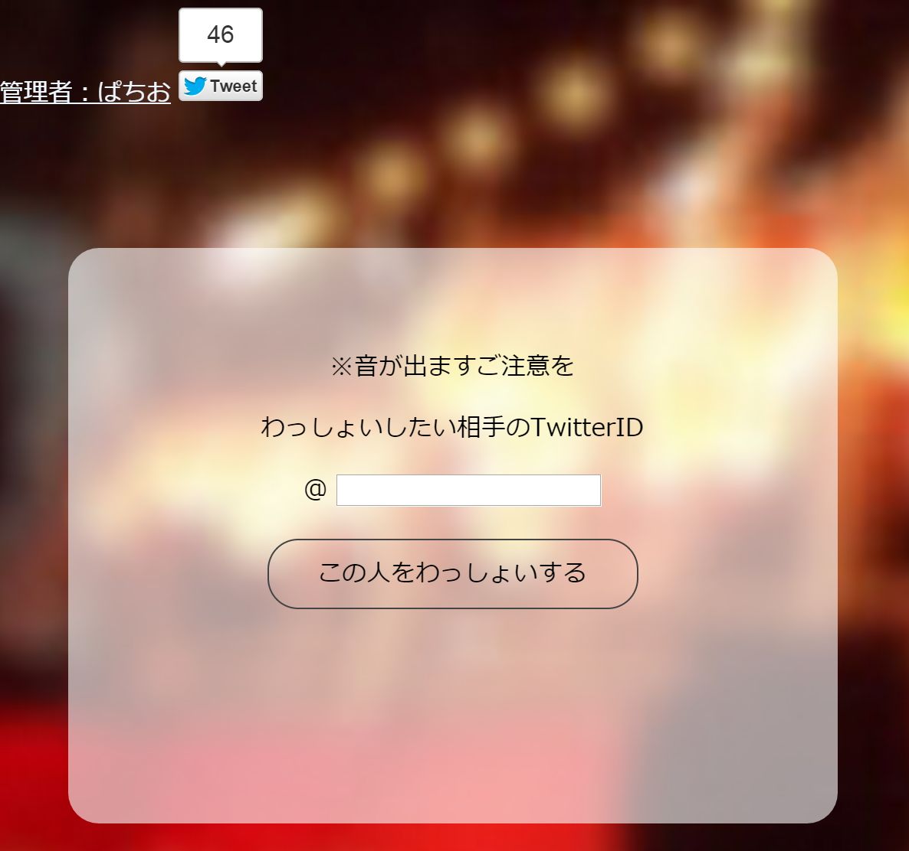
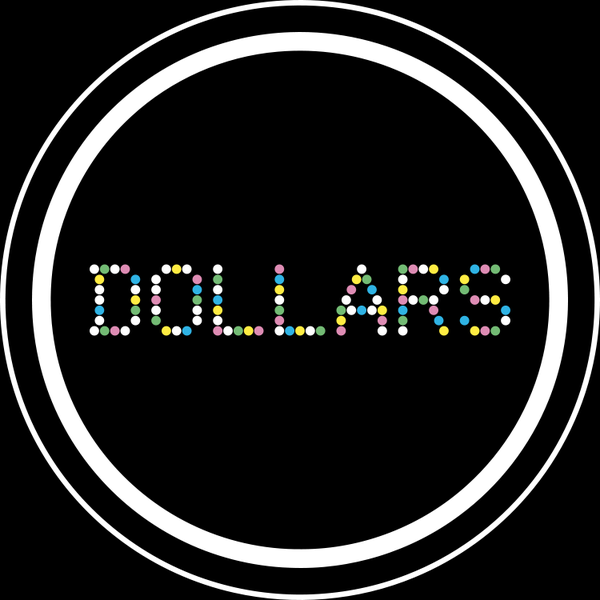

Wasshoiぱちお夏の陣2015
No.7 Twitterのあの人をわっしょいできるサービス
基本的にJavaScriptでごりっとしただけです
最初はKnockoutせっかく使ったんだしなんかバインディング上手いことできるものつくりたいとか思ってた結果、別にKnockoutでなくてもいいよくわからないものができました
Canvasを使った描写ってことなんですが、DOMとしていじってないからオブジェクトで判断ができない・・・（衝突判定とか）
なんかそのあたりいい具合に知ってる方いたら教えてほしいです
ちなみに今回はclientX,YとgetBoundingClientRect()で拾ってくる値の差でマウス座標出してあたり判定作ってます
なんで作ったの？？
友人が全力で作ったWebサービスが公開されたということでその頑張りを称えて胴上げしたかったんです
池袋ダラーズ【アニメ非公式コミュニティ】 Twitterはこちら
友人お疲れ様やでわっしょいわっしょい